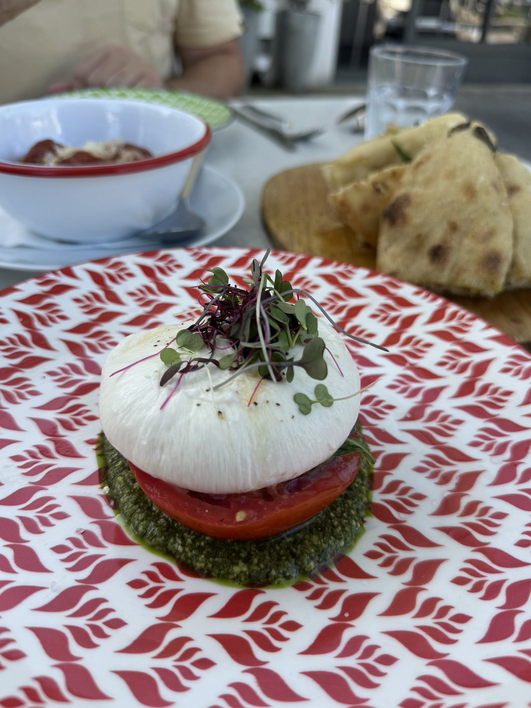
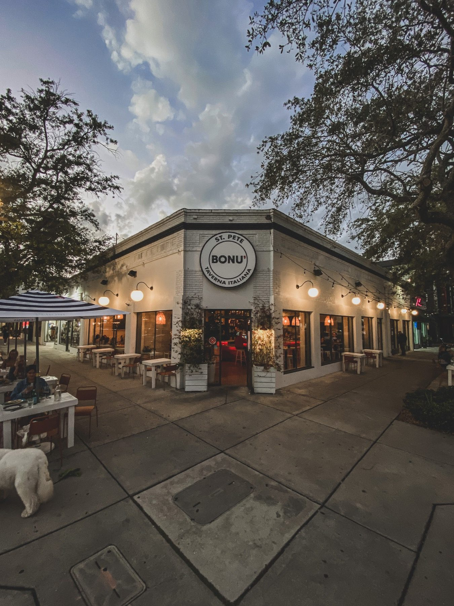
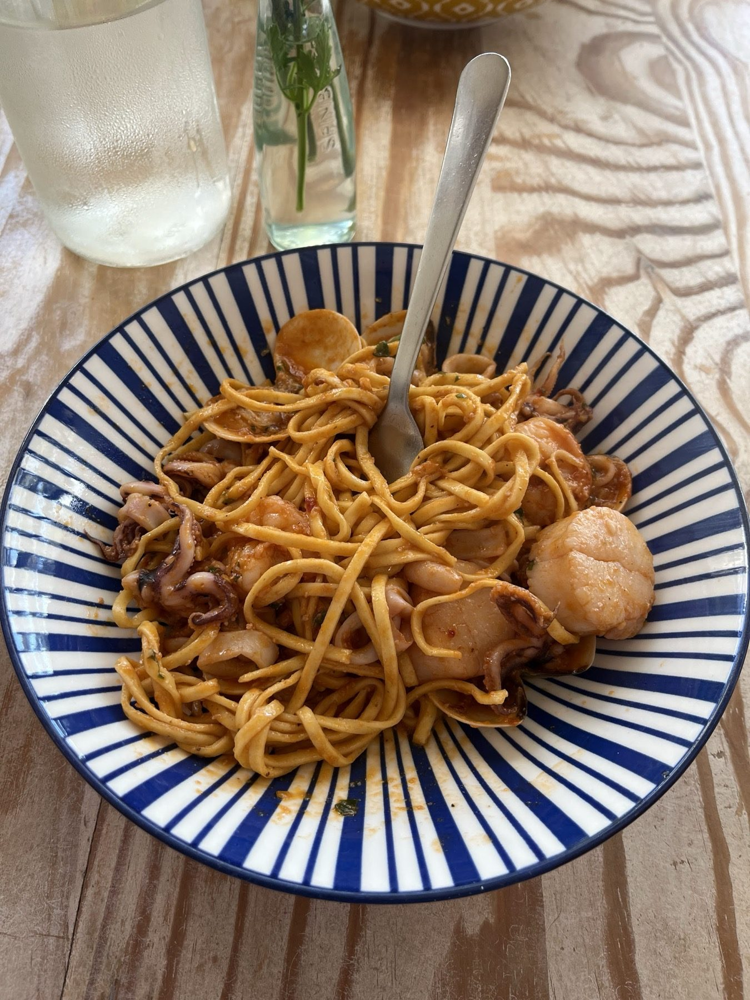
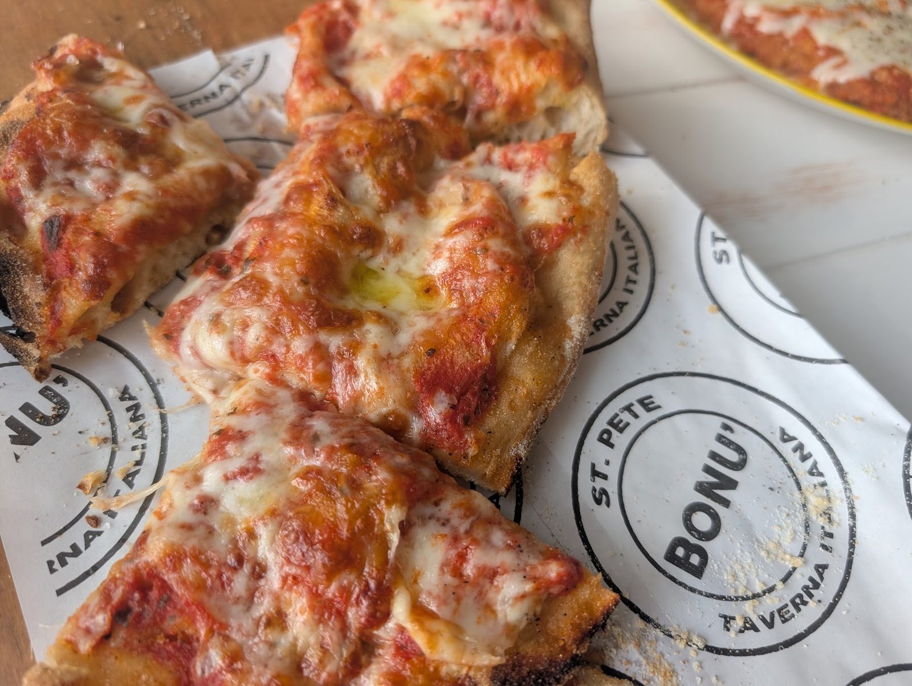
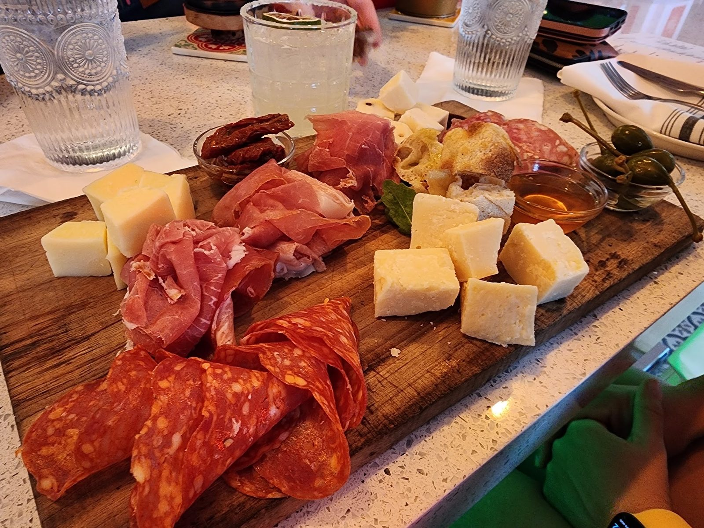
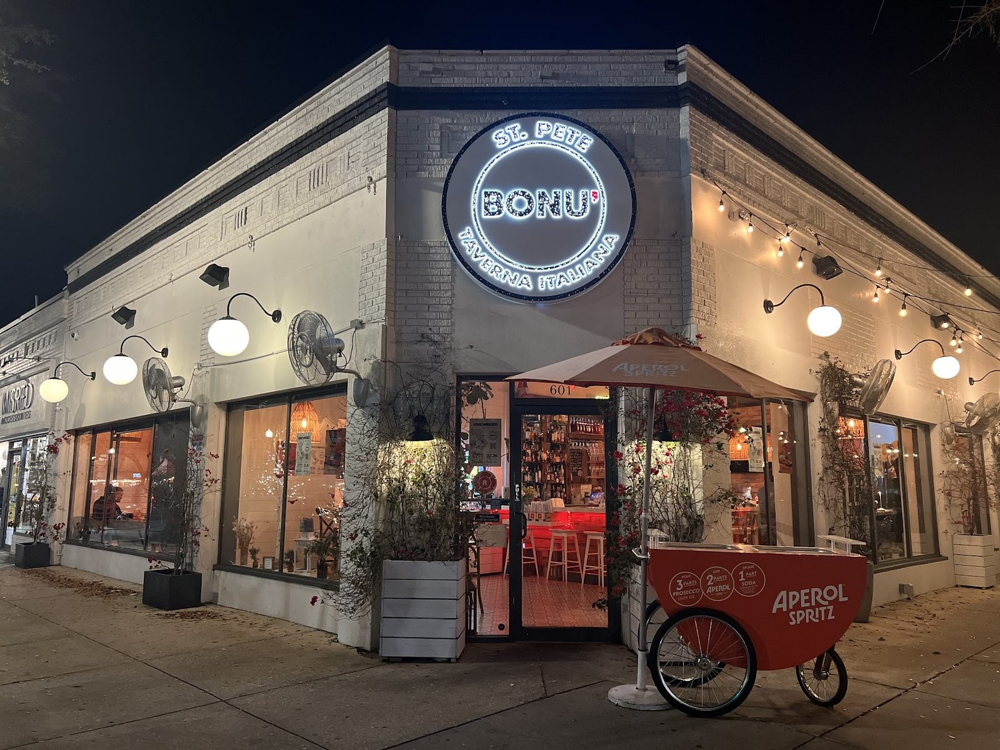
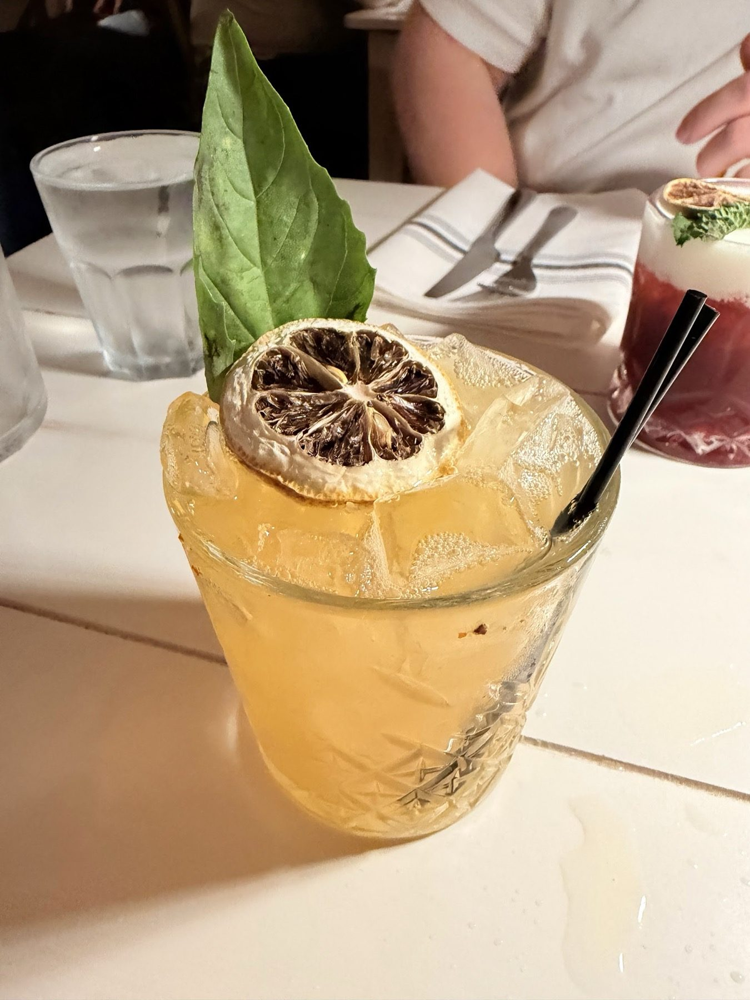
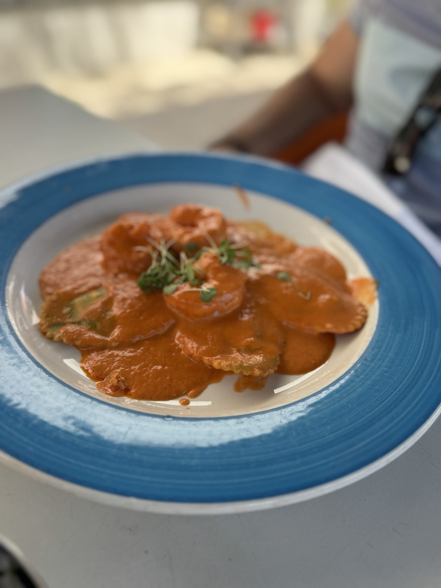
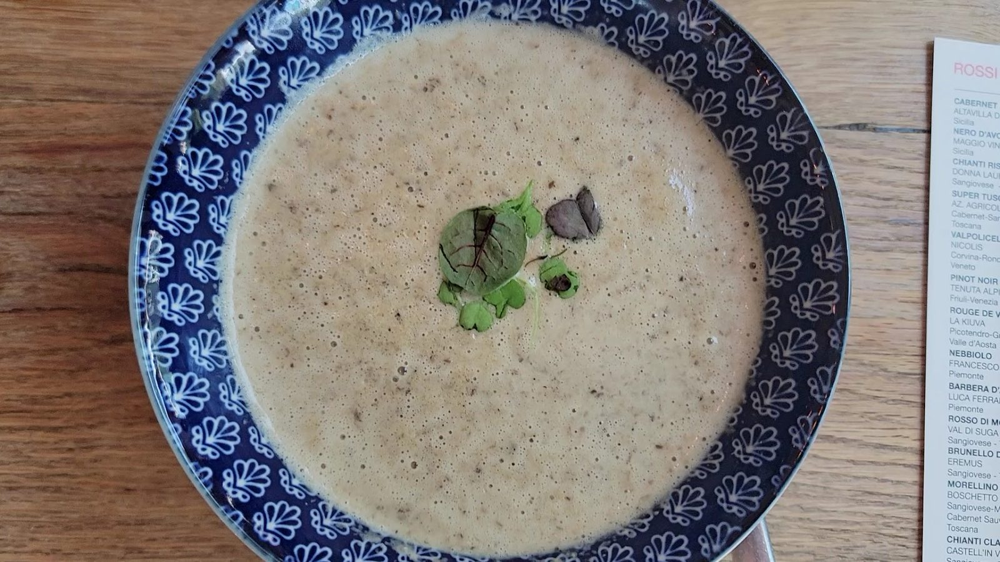
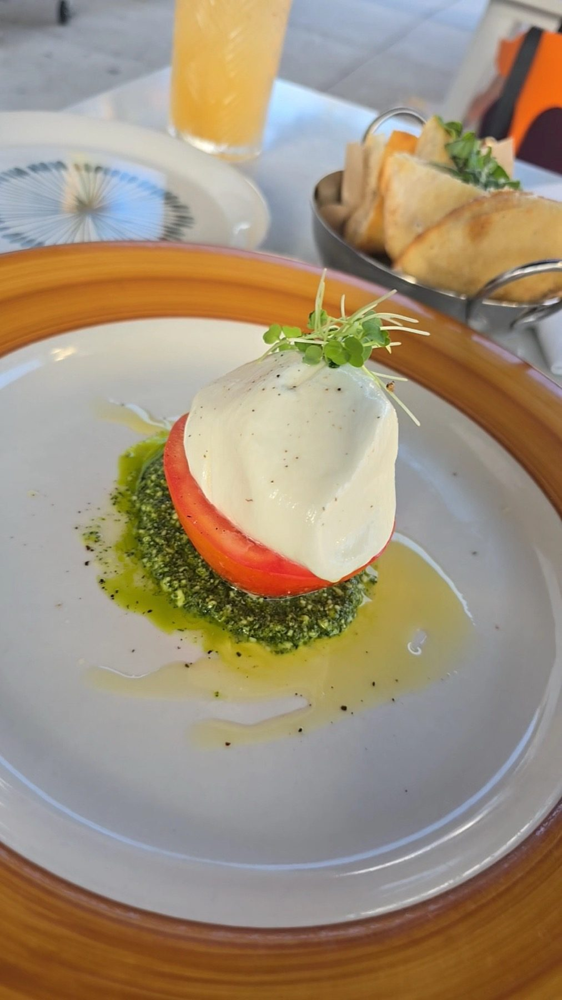

Piccoli piatti
Burrata, arancini, polpette and calamari to share.
Italian restaurant · St. Petersburg, FL
Pasta, pinsa and small plates from South Italy and the Mediterranean.

Small plates, pasta and hand-pressed pinsa, with cocktails and wine to match.

Burrata, arancini, polpette and calamari to share.

Pesto, gnocchi, linguine, lasagne and a pasta of the day.

Hand-pressed Roman style dough with rosemary and sea salt, or toppings like mushrooms and truffle oil.






4.4 1094 Google reviews
We were missing Italy so my friend sent us the Bonu. And it was truly authentic Italian! The owner was so kind and the service was impeccable. Each and everything we ordered was delicious and tasted fresh and wonderful! We stayed longer and enjoyed our time and took it all in. Thank you for a fantastic experience that gave us a flavor of Italy that we miss so much.
This was my second time here and honestly both times were amazing. My husband and I came here for our honeymoon and I could not stop thinking about the Viola cocktail after that first visit lol. We came back recently with my brother and sister-in-law and I ordered the Viola again, still so good!!
Excellent choice at Bonu!! My friend and I went to celebrate her birthday on a Friday night outside. It was a great vibe, nice music, easy to relax. Alex was our server, and he was awesome and guided us through the menu with suggestions, and we never once felt rushed. We had the pesto pasta and gnocchi. Absolutely the best gnocchi we’ve ever had!!!!! Please get it & you won’t regret it.

We believe one of the greatest sources of joy is what happens around the dinner table.
We share our South Italian culinary culture, with an ever-changing menu of clean flavors and seasonal ingredients.
601 Central Ave, St. Petersburg, FL 33701
We hold your table up to 15 minutes after your reservation time.